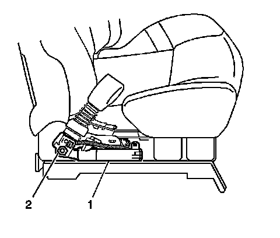

Removal and Replacement
Seat Belt Buckle Pretensioner Replacement
Removal Procedure
Caution: When carrying an undeployed inflatable restraint seat belt pretensioner:
* Do not carry the seat belt pretensioner by the wires or connector.
* Carry the seat belt pretensioner by the piston tube, keeping hands and fingers away from the cable.
* Make sure the open end of the seat belt pretensioner piston tube points away from you and other people.
* Do not cover the seat belt pretensioner piston tube opening with your hand.
Failure to observe these guidelines may result in personal injury.
Caution: Refer to SIR Caution (SIR Caution) .
1. Disable the SIR system. Refer to SIR Disabling and Enabling (Service and Repair) .

2. Disconnect the pretensioner electrical connector from the side air bag connector.
3. Disconnect the electrical connector from the seat belt switch.
4. Remove the seat from the vehicle. Refer to Bucket Seat Replacement (Bucket Seat Replacement) .
5. Remove the pretensioner trim cover by pulling out on the cover.
6. Fully deploy the module before disposal. If the module was replaced under warranty, fully deploy and dispose of the module after the required retention period. Refer to Pretensioner Handling and Scrapping (Procedures) .
7. Remove the pretensioner fastener (2) and remove the pretensioner (1) from the seat.
Installation Procedure
1. Install the pretensioner (1) to the seat. Notice that the pretensioner has a tab that fits into the seat in order to insure that the pretensioner is in the proper position.
Notice: Refer to Fastener Notice .
2. Install the fastener (2) while holding the pretensioner in place.
Tighten the nut to 42 N.m (31 lb ft).
3. Install the pretensioner trim cover by aligning the tabs. Snap the tabs into place.
4. Install the seat into the vehicle. Refer to Bucket Seat Replacement (Bucket Seat Replacement) .
5. Carefully route the pretensioner pigtail harness and the seat belt wiring harness under the seat.
6. Connect the pretensioner electrical connector to the side air bag connector.
7. Connect the electrical connector to the seat belt switch.
8. Enable the SIR system. Refer to SIR Disabling and Enabling (Service and Repair) .